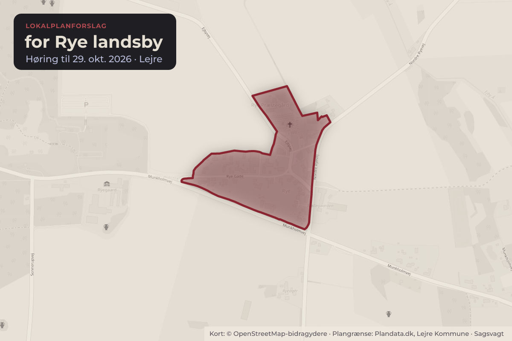
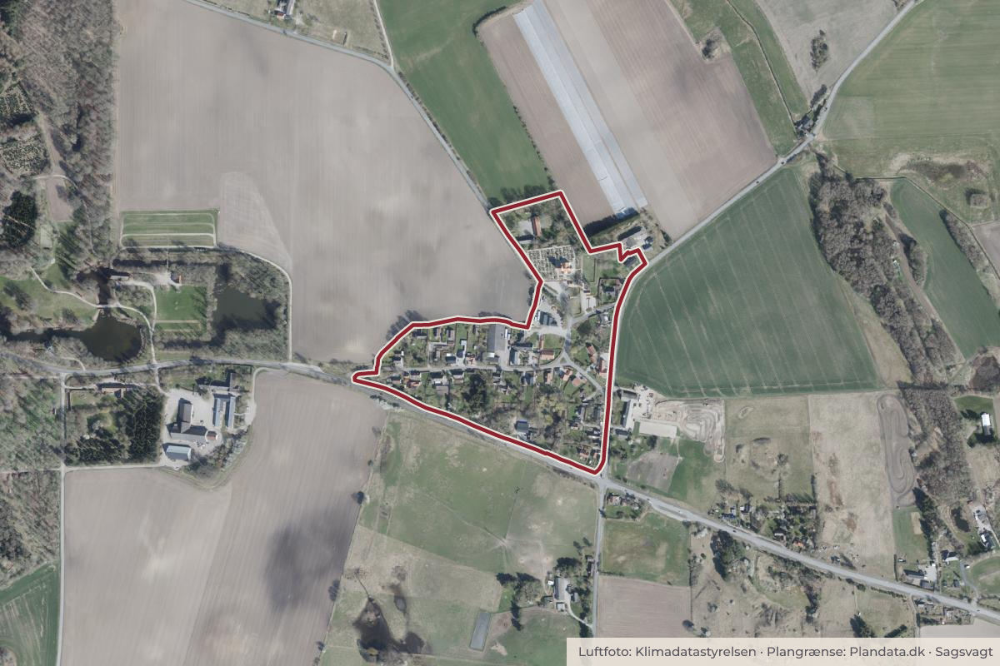

Besluttet 8. september, Udvalget for Trafik, Miljø & Byggeri, Lejre
TMB - Forslag til Lokalplan 13.01A for Rye landsby - Ændret afgræsning af Område A og B
BoligerByggeri og lokalplanerErhverv og job

Kort: © OpenStreetMap-bidragydere. Plangrænse: Plandata.dk, Lejre Kommune.

Kort fortalt
- Forslaget
- Forslag til Lokalplan 13.01A for Rye landsby godkendes til udsendelse i offentlig høring i 4 uger.
- Hvem
- Udvalget for Trafik, Miljø & Byggeri, Lejre Kommune
- Hvornår
- Tirsdag 8. september 2026
- Status
- Besluttet. Indstillingen anbefales.
Er noget forkert her? Skriv til os
Læs hele sagen Kommunens egen tekst
Indstilling
Direktionen indstiller:
1. at Forslag til Lokalplan 13.01A for Rye landsby godkendes til udsendelse i offentlig høring i 4 uger.
Sagsfremstilling
Ejeren af Ejbyvej 7 ønsker at få afklaret, om der kan opføres en helårsbolig på Ejbyvej 7 i Rye.
Grunden er ubebygget og omfattet af Lokalplan 13.01 Rye by. Grunden ligger i Område B, som er udlagt til erhvervsområde.
Flere af naboejendommene i samme erhvervsområde anvendes i dag til boligformål.
Baggrunden er, at daværende Bramsnæs Kommune i 2005 meddelte dispensation til udstykning og opførelse af boliger inden
for erhvervsområdet. Derfor blev der opført boliger på flere af de omkringliggende ejendomme. Ejbyvej 7 blev imidlertid aldrig
bebygget, og da dispensationen for Ejbyvej 7 ikke blev udnyttet inden for den lovbestemte tidsfrist på 3 år, er den bortfaldet.
Praksis fra Planklagenævnet gør, at man ikke må dispensere fra lokalplanernes anvendelsesbestemmelser. Derfor kræver det
en ændring af den eksisterende lokalplan, hvis Ejbyvej 7 skal anvendes til boligformål. Når lokalplanen ændres, vil det samtidig
være mere korrekt at ændre anvendelsen af de naboejendomme i erhvervsområdet, som i dag anvendes til boliger, til
boligformål, så plangrundlaget stemmer overens med de faktiske forhold.
Administrationen har derfor udarbejdet et tillæg Lokalplan 13.01 for Rye landsby (Forslag til lokalplan 13.01A), som ændrer
afgrænsningen af Område A (boligområde) og Område B (erhvervsområde). Ændringen gør det muligt at opføre en bolig på
Ejbyvej 7 og sikrer samtidig, at lokalplanen stemmer overens med de faktiske forhold på Ejbyvej 5, 7A og 7B samt Rye Gade 4,
6 og 8. Ejbyvej 9 og Rye Gade 10 indgår fortsat i Område B (erhvervsområde), da der er erhverv uden boliger på disse
ejendomme.
Indholdsmæssigt er der kun foretaget ændringer af lokalplanens afgrænsning af område A og B. Derudover er
lokalplanforslaget blevet indarbejdet i Lejre Kommunes digitale lokalplanportal, hvilket indebærer, at der er foretaget nogle
opdateringer af planens retsvirkning og kortbilag for at sikre, at lokalplanen følger kommunens nuværende lokalplanskabelon.
Teksten fra den oprindelige Lokalplan 13.01 Rye by er overført til den nye lokalplanskabelon, og ændringerne fremgår med en
tydelig grøn farve. Det er kun disse ændringer, der sendes i høring. Resten af lokalplanen er uændret.
Administrationens vurdering
Siden der blev givet dispensation fra lokalplanen i 2005, er både lovfortolkningen og praksis fra Planklagenævnet blevet
skærpet. Ifølge planlovens § 19 kan der meddeles dispensation, hvis det ikke strider imod 'lokalplanens principper'. Tidligere
blev 'lokalplanens principper' tolket som lokalplanens formålsbestemmelser, og lokalplanens anvendelsesbestemmelser, hvis
disse underbyggede formålsbestemmelserne. Nu bliver 'lokalplanens principper' tolket som lokalplanens formåls- og
anvendelsesbestemmelser.
Da Ejbyvej 7 er udlagt til erhverv som en del af område B i anvendelsesbestemmelserne i den nuværende Lokalplan 13.01 for
Rye by, kan Lejre Kommune derfor ikke længere give dispensation til boligformål. Hvis der skal være mulighed for bolig på
ejendommen, kræver det derfor et tillæg til lokalplanen.
Beslutning
Indstillingen anbefales.
Kilde: Lejre Kommune, Udvalget for Trafik, Miljø & Byggeri, referat fra mødet tirsdag 8. september 2026, punkt 9. Læs den originale sag hos kommunen.